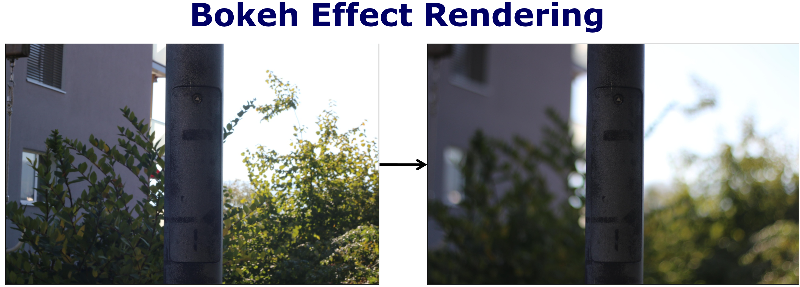
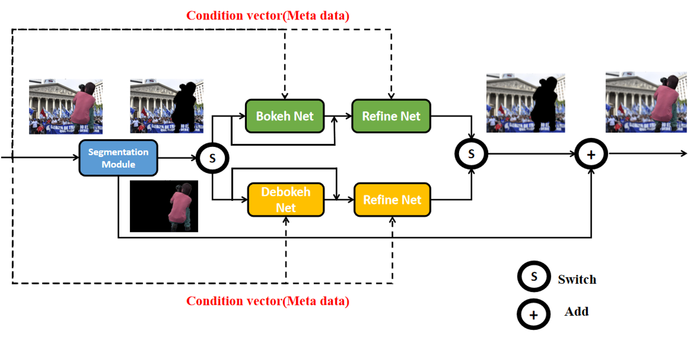

I am now a master in National University of Singapore, attending Learning and Vision Lab, where I was advised by Prof. Xinchao Wang. Before that, I finish my bachelor degree at school of EE, HARBIN INSTITUTE OF TECHNOLOGY, SHENZHEN. I am interested in Low-level vision, Graph Neural Network, Diffusion Model and LLM etc.
We have conducted significant work in the realm of computational photography on mobile devices. We have proposed CBTNET, a controllable bokeh transformation model. This model is designed to convert the bokeh effect of one lens to the effect of another lens, while preserving the sharpness of the foreground regions in the image.
 Huawei Connect (HC) 2020 | MindSpore Hub
The initial verison of GhostNet was accepted by CVPR 2020, which achieved SOTA performance on ImageNet: 75.7% top1 acc with only 226M FLOPS. In the current version, we release a series computer vision models (e.g. int8 quantization, detection, and larger networks) on MindsSpore 1.0 and Mate 30 Pro (Kirin 990).
I am interested in Low-level vision, Graph Neural Network, Diffusion Model and LLM etc.